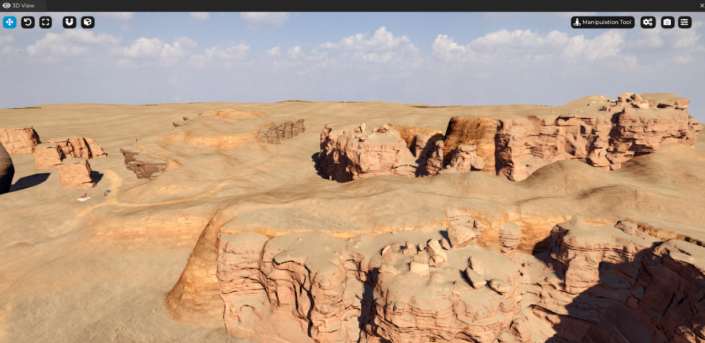

Cave Engine 1.2 - Release Notes
Welcome to Cave Engine 1.2, one of the biggest and most exciting new versions so far. This is also a version that will set the groundwork for the future of the engine so stay tuned for all the release notes.
Cave 1.2 focuses a lot on your experience, to make sure that the engine tech provides you all the necessary tools and features to create realistic and advanced games, taking advantage of modern rendering, animation and terrain features and much more.
Cave Engine 1.2 brings major improvements to rendering, editor usability, performance, and Linux support. Download now and explore the new features!
Porting Note: If you're currently working on a game project using Cave 1.1, I've made a good effort to make your old project file compatible with this new version, but since there are so many new (and different) things, including a completely new rendering system, it is expected that you will have to redo some of the visuals of your game, such as adjusting lightning, the shaders and materials and also the textures. This is necessary to take advantage of all the new rendering features of Cave 1.2.
Get Cave Engine
You can Purchase Cave Engine on itch by clicking here:
Main Highlights
We have many new features and even with all the effort I've made into this release notes, I will probably not be able to walk through them now, but I will highlight the most interesting ones here.
The Cave Engine Bible (Documentation)
Cave Engine now have a complete documentation in a form of a Bible! A step-by-step book that you will be able to download and access completely offline anytime you want.
The version 1.0 of the Cave Engine Bible is finally done and it's almost a hundred pages long, containing all the basics that you need in order to get started in the most quick and efficient way possible. Understanding every corner of the engine. I plan to expand this Bible even more with examples, tutorials, etc.
Terrain System
Terrain creation and editing is finally here. You can now create simple or advanced terrains, being small or large, up to your imagination. Taking advantage of cave engine's new terrain tools to shape and create your worlds as you wish.
 In the image above, you see a terrain being created using a combination of many cave systems: The Terrain Component as the base and foundation for the entire landscape, custom mega scan Meshes as Entities (with mesh components) to represent the rock cliff sides and custom Shader Program to create a custom Material for the terrain itself. Allowing you to paint roads, different texture variations and so on.
It includes, but not limited to: - New Terrain Component. - Introduced a Terrain Editor for you to create your terrain with various editing tools, such as sculpt, erase, smooth, flatten, set height, erosion, noise and texture paint. - Terrain Physics integration.
You can also use an existing/external HeightMap as a starting point to your Terrains.
Viewport Tools
With the introduction of the Terrain Systems and also the multi-select and undo (ctrl+z), we had to change the way you interact with the viewport. Now everything is done through the viewport tools. For now we have the manipulation tool, for the regular entity manipulation that you already know, and the terrain tool. More tools coming in the future, such as the Geometry Paint Tool.
Inverse Kinematics (IK)
Cave engine's Animation System is already very robust, supporting blended animation, multiple layers of animations being played at the same time with blending between them and even per bone layer blending. The Animation can also have python callbacks to give you a lot of flexibility. You can run custom code after the animation is evaluated for each character and manually modify the final poses.
Great, but nothing is this is "new" to Cave 1.2: they're all existing Cave features, including version 1.1 and previous ones.
What is new is that now, making inverse kinematics is very easy, thanks tohandy methods inside the armature and bone classes.
You can learn more about this by watching this video: https://youtu.be/S1yExoDovY4
Multi-Select Entities in the 3D View
Now you can hold Shift to select Multiple Entities and manipulate them in Batch in the 3D View.
All the operations involving entries in the 3D view are now handled by the newly created Manipulation Tool. More about it: - Added support for multi-selection in the 3D viewport. - Improved entity manipulation tool UI and controls. - SceneGraph now supports drag and drop for multi-selected entities.
Undo System (Ctrl + Z)
Having an option to undo an action is one of the most frequently requested features for a Cave and it's now here.
All the movements and transformations you make in the 3D view are now stored and you can press Ctrl + Z to undo them. At the moment there is some limitations and it does not support undoing modifications you do outside the 3D view, such as manually changing a field in the Properties Tab, but having it in the 3D view is already a great advance and very useful for level design.
- Implemented an Undo System for entity transformations in the 3D View.
- Allows reverting position, rotation, and scale changes and also Entity Duplications.
Rendering Improvements
Cave 1.2 Rendering System is very different from all the previous ones. That's because I worked hard to address many technical issues in the engines to make sure that it looks as good as possible, while still giving you all the flexibility you need and expect to create either realistic or unrealistic/stylized visuals.
If you're coming from 1.1, you can expect pretty much an entirely new way of thinking about the visuals, specially because now, with HDR, the light values can be much higher and very different from what you're used to in 1.1. Here is a comparison:
On the left you see Cave 1.1, in the middle, the new version (1.2) and on the right, Unreal Engine 5.5, as an external reference. You can see that Cave 1.2 have a much closer resemblance to Unreal Engine 5, given the exact same character, textures and material. That because both Cave and Unreal implements a Physically Based Rendering (PBR), so it is expected for them to have similar looks under the same circumstances.
Notice how the image on the left have visual artifacts because the eyes of the characters are a different material and that was not supported in cave 1.1. This is now addressed and works in Cave 1.2, as you will see in a moment. It's important to mention also that to create this side by side comparison between Cave, the Scene Lightning and Shadow Settings are different, since they are now much different from the older version of the engine.
Here is what's new when it comes to the Rendering:
Native High Dynamic Range (HDR) Rendering
One of the key features that were necessary in order to improve our Physically Based Rendering (PBR) System is HDR (High Dynamic Range). This is now implemented and used by all the rendering proccesses of the Engine.
It renders the world in HDR, allowing you to have much more realistic light intensities and values and then performs an exposure, eye adaptation and tone mapping passes, to bring the range down to LDR (Low Dynamic Range), which is required to support all monitors.
You can know more about it in this video: https://youtu.be/fEYHIgoEayY
Changes: - Added HDR rendering support with automatic exposure adjustment and tone mapping. - Camera now have Exposure and Eye Adaptation Settings - Improved color correction pipeline. - Textures can now be either in Linear or Gamma Space
Porting Note: Starting from Cave 1.2, newly imported Textures are automatically detected as Normal Maps or regular textures and set to Linear or Gamma Space accordingly, so for new users or projects, this note isn't relevant. But if you're porting a Project from 1.1, you will need to manually change the old textures from Linear to Gamma (except the Normal Maps).
Improved PBR Rendering
As I said, Cave's PBR Rendering is now much more accurate, but that's not the only thing that got improvements:
- Fixed PBR Math calculations to give a much more accurate result.
- Parallax Displacement Mapping (Experimental) added for better depth representation in materials.
- Improved Material Shader System with much more organized and intuitive GLSL Shaders and Uniforms.
- Fixed issues with Normal Maps (inversion and flipping corrections).
- Improved Shadow Quality with better PCF filtering.
Multi Material Animated Meshes
Previously, if you had an animated model such as a character, there was a known limitation that you could not have multiple materials in the model. Animated Mashes only supported a single material. This is now no longer a true: Cave 1.2 now supports multiple material animated meshes.
Improved Project Manager
Now the thumbnails (finally) fit the entire screen. Splash Screen is more properly placed AND the invalid (or incompatible) projects are placed separately, bellow the regular (valid) projects.
I've also implemented Lazy Loading for the project Thumbnails, since if you have A LOT of projects, it was impacting negatively the time it takes to open the Project Manager and as y'all know, we like stuff to load immediately here in Cave!
Profiler Rewrite: Faster and Better!
I've rewritten the frame profiler (that measures CPU time). Since it is deeply attached to every corner of the engine, it's very important that it is fast, because this impacts the performance of your game. Now it's much faster and more efficient. I also took the opportunity to overhaul the Profiler Tab UI to make it more concise, easier to understand, navigate and find the information you need.
- Captured frames (that you can open with
chrome://tracing- in Google Chrome) are now stored atLogs/Profiler Captures/inside your project dir and are more precise as well. - Now it's possible to pause the frame capture in order to properly analyse frame by frame inside the engine itself, without having to rely solely on the Captured frames.
- It's now possible to force GPU Sync, which gives a better CPU overview, allowing you to make sure that is CPU bound and what is GPU bound. Note: This affects performance and may reduce framerate A LOT. It's a tool for debugging only.
I'm still working on ways to better debug the memory and GPU side.
- Profiler overhaul with new UI improvements.
- Added a GPU sync option for performance tracking.
- Show Memory Usage
Steam API Integration
Do you want to Release your game on Steam? Then you will probably want to includpe Steam Achievements and other useful things. So Cave 1.2 now got you covered!
Usage example:
cave.steam.init()
user = cave.steam.getPersonaName()
print("Steam User:", user)
The goal is to provide you a very simple API to easily access the main Steamworks SDK functionalities such as achievement and username. I'm looking forward to expand this API as cave users needs it. So if you're working on a Steam game using cave, let me know your custom needs in our Discord server.
Current API:
def restartAppIfNecessary(appID: int) -> bool: ...
def init() -> int: ...
def shutdown() -> None: ...
def isInitialized() -> bool: ...
def getPersonaName() -> str: ...
def unlockAchievement(achievementID: str) -> None: ...
def hasAchievement(achievementID: str) -> bool: ...
def clearAchievement(achievementID: str) -> None: ...
def getNumAchievements() -> int: ...
def getAchievementName(id: int) -> str: ...
def isOverlayActive() -> bool: ...
Note: Due to Steam's EULA (licensing), we can't redistribute the Steamworks SDL with cave. So by default, this integration won't work. To enable it, you must be a Steam Partner, download the SDK yourself and paste the DLL under Cave Folder.
Asset Importer Rewrite
I've completely rewritten the Asset Importer System for Cave 1.2, allowing a much more accurate result, possibilitating, for example, the Multi Material Animated Mesh, but also bringing other improvements, such as a cleaner Entity Template:
The Asset Importing pop up now allows you to batch filter out Asset Types and other options, useful when importing a lot of files at once.
Faster Project Loads!
I've cached the Image Textures, since loading raw png was taking around 60-70% of the load time (depending on the project). I was able to reduce load times in up to 3x. A test on a project we have that weights 1.6gb:
🔴 Before: 33 seconds 🟢 After: 11 seconds
This does not affect the loading time of the exported project, since once exported, it does not save images in png but in the optimal format of the cave (meaning that it is already faster). Png is only used during editing, to facilitate git.
- Optimized texture caching, leading to up to 3x faster game loading times.
- Rewrote the Asset Importer, now supporting multi-material animations and meshes.
UI Element: Scissor Mask
Now it's possible to use an UI Element's bounding area as a Scissor to mask out rendering its child elements. This is useful for creating more advanced UIs such as dropdowns or scrollable menus.
Better Thumbnail Generation
Before, most of the times the Entity Templates would have no thumbnail at all... now it's much more clear:

Cave on Linux (OS)
I'm working to improve Linux support, not only for you to be able to have a good experience using the engine, but also to be able to easily export the game for others to have a smooth experience with your project as well. As of Cave 1.1, it only worked with X11 systems, not Wayland. I've improved this to hopefully work on most Wayland machine as well.
Cave 1.2, may still require you to manually install or tweak some third-party libraries using apt or equivalent for your system, but I'm working to completely eliminate or at least automate this installation process in future pathes for the engine (Cave 1.2.x). Please communicate with me on Discord if you have any questions about it or need help.
- Improved Linux compatibility with *better OpenGL and SDL error handling.
- Added Linux requirement scripts for easier setup.
Other Improvements
- Python API Enhancements: New list operators for vector classes, improved Python error messages, and new random.shuffle() and random.choice() functions.
- Editor UI Enhancements: Improved entity highlighting, added tooltips for material uniforms, and better float formatting.
- New Mesh Functions: Added new shape creation methods and improved LOD distance scaling options.
- New Memory Monitor: Tracks memory usage in real-time.
- Improved AABB/BoundingBox generation Algorithm
- New
CharacterComponentgravity direction option.
Fixes
- Fixed shader compilation errors on some GPUs.
- Improved shader error messages with better filename reporting.
- Fixed shadow artifacts in PBR rendering.
- Fixed crashes related to the memory monitor, audio tracks, asset importer, and real-time component removal.
- Fixed animation root motion issues.
- Fixed GLSL syntax errors and optimized multiple shaders.
- Fixed incorrect normal map interpretations.
- Fixed 2D Audio Component not playing.
- Fixed various crashes when importing textures, deleting templates, and handling missing assets.
- Fixed Entity Highlighting Bug after exiting play mode.
- Fixed Particle Component crashes with negative particles.
- Fixed incorrect scene copy operation leading to crashes.
- Fixed fullscreen mode glitches.
- Fixed VSYNC toggle and FPS limiter issues.
- Fixed various crashes in the Profiler tab.
- Fixed crash after deleting asset and going back to it (using Properties Tab's back button)
- Fixed TAB that was working during playmode (not supposed to)
- Fixed crash when trying to remove
Noneentity from scene.